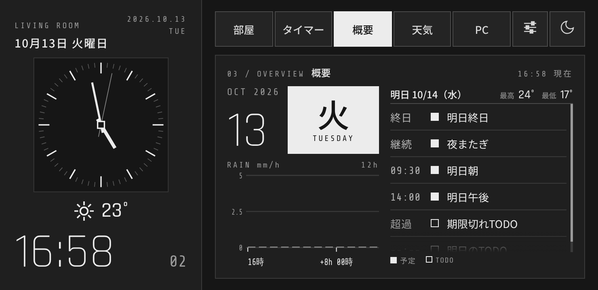
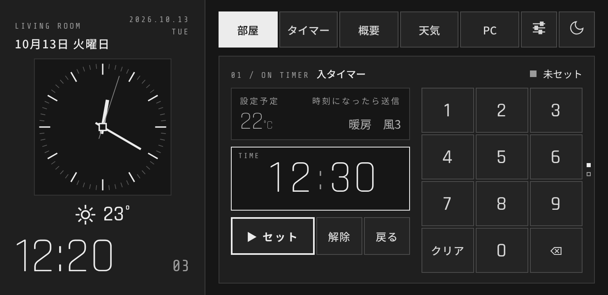

Smart Display
壁掛け用スマートディスプレイ（Android アプリ）
Smart Display は、スマートフォンを壁掛けの小さなディスプレイとして使うための、個人が開発した Android アプリです。 時計、エアコン・照明の操作（SwitchBot）、タイマー、天気、パソコンの状態表示、そして今日・明日の予定とToDoの一覧を、ひとつの画面にまとめます。
主な機能
- 部屋: エアコンと照明の操作。エアコンには、時刻を指定して設定を送る「入タイマー」があります。
- タイマー: 単体のタイマー。終了時に振動で知らせます。
- 概要: 今日の日付と曜日、12時間分の降水量、予定とToDoの一覧、最高・最低気温。
- 天気: 時間ごとの天気・気温・降水量・風・湿度。
- PC: パソコンの CPU・メモリ・GPU・通信量、再生中の曲の操作、音のビジュアライザー（任意）。


Google のデータの使い方
「概要」タブで予定とToDoを表示するために、利用者本人が許可した場合に限り、次のデータを 読み取り専用 で取得します。
| 権限（スコープ） | 使う目的 |
|---|---|
calendar.readonly | Google カレンダーの予定（タイトル・日時）を、概要タブの一覧に表示する |
tasks.readonly | Google ToDo のタスク（タイトル・期日）を、概要タブの一覧に表示する |
データの作成・変更・削除はしません。取得した内容は利用者のスマートフォンの画面に表示するためだけに使い、開発者や第三者のサーバーには送りません。 詳しくはプライバシーポリシーをご覧ください。
Smart Display による Google API から受け取った情報の使用および他のアプリへの転送は、 Google API サービスのユーザーデータに関するポリシー （Limited Use の要件を含む）に準拠します。
お問い合わせ
開発者: Sokunun ／ taroujun53@gmail.com
Smart Display (English summary)
Smart Display is a personal Android app that turns a phone into a wall-mounted display: clock, SwitchBot air-conditioner and light control, timers, weather, PC status, and a combined list of upcoming calendar events and tasks.
With the user's explicit consent, the app reads Google Calendar events (calendar.readonly) and Google Tasks (tasks.readonly) in read-only mode, solely to show them on the user's own device. The data is not sent to the developer or to any third party. Use of information received from Google APIs adheres to the
Google API Services User Data Policy, including the Limited Use requirements.
See the Privacy Policy. Contact: taroujun53@gmail.com